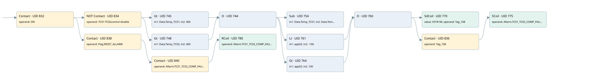

tc01/tc02 signal compare fault
allarms 3 · 검색 색인 순서 8 · 원본 내부 NID 추정 8
백업 PLF 원본의 3173006 바이트 위치에서 복원한 XML. 검색 문서 1986의 객체 키 16102200786b000000000000와 연결했다. 이름 해석 20/20개. 남은 RefId는 상수 또는 미해석 참조다.
연결 구조 다시 그리기
원본 Part/PCon/Wire를 이용한 연결도다. TIA 화면의 래더 배치 또는 실행 결과를 재현한 그림은 아니다. 핀 연결은 아래 표와 원본 XML을 기준으로 읽는다. 노드 위에 마우스를 두면 피연산자 이름을 볼 수 있다.

접점·코일·블록과 피연산자
| Part UID | Gate | Negated 핀 | 연결 피연산자 |
|---|---|---|---|
| 832 | Contact | operand = ON | |
| 834 | Contact | operand | operand = TC01-TC02control disable |
| 745 | Gt | in1 = Data.Temp_TC01; in2 = 400 | |
| 748 | Gt | in1 = Data.Temp_TC02; in2 = 400 | |
| 744 | O | ||
| 754 | Sub | in1 = Data.Temp_TC01; in2 = Data.Temp_TC02; out = app02 | |
| 761 | Lt | in1 = app02; in2 = -100 | |
| 764 | Gt | in1 = app02; in2 = 100 | |
| 760 | O | ||
| 770 | SdCoil | value = S5T#1M; operand = Tag_108 | |
| 836 | Contact | operand = Tag_108 | |
| 775 | SCoil | operand = Allarm.TC01_TC02_COMP_FAULT | |
| 838 | Contact | operand = Flag.RESET_ALLARM | |
| 840 | Contact | operand = Allarm.TC01_TC02_COMP_FAULT | |
| 780 | RCoil | operand = Allarm.TC01_TC02_COMP_FAULT |
접점 경로를 펼친 조건식
Contact·O/A·비교기의 원본 연결을 읽기 쉽게 펼친 보조 해석이다. POWER는 전원 레일 시작을 뜻한다. 호출 블록·에지·타이머의 내부 동작과 다중 쓰기 순서는 이 표로 실행 검증하지 않았다. 미해석 핀과 RefId는 원문 연결표에서 확인한다.
| UID | 동작 | 대상 | 원본 접점 경로 | 내용 |
|---|---|---|---|---|
| 770 | SdCoil | Tag_108 | (((((ON AND NOT [TC01-TC02control disable]) AND [Data.Temp_TC01 > 400]) OR ((ON AND NOT [TC01-TC02control disable]) AND [Data.Temp_TC02 > 400])) AND [app02 < -100]) OR ((((ON AND NOT [TC01-TC02control disable]) AND [Data.Temp_TC01 > 400]) OR ((ON AND NOT [TC01-TC02control disable]) AND [Data.Temp_TC02 > 400])) AND [app02 > 100])) | 시간 동작 SdCoil; 타이머 의미 추가 확인 / 시간 인자 S5T#1M |
| 775 | SCoil | Allarm.TC01_TC02_COMP_FAULT | ((((((ON AND NOT [TC01-TC02control disable]) AND [Data.Temp_TC01 > 400]) OR ((ON AND NOT [TC01-TC02control disable]) AND [Data.Temp_TC02 > 400])) AND [app02 < -100]) OR ((((ON AND NOT [TC01-TC02control disable]) AND [Data.Temp_TC01 > 400]) OR ((ON AND NOT [TC01-TC02control disable]) AND [Data.Temp_TC02 > 400])) AND [app02 > 100])) AND Tag_108) | 조건 성립 시 Set |
| 780 | RCoil | Allarm.TC01_TC02_COMP_FAULT | ((ON AND Flag.RESET_ALLARM) AND Allarm.TC01_TC02_COMP_FAULT) | 조건 성립 시 Reset |
원본 배선 연결
| Wire UID | 동일 Wire 연결 끝점 |
|---|---|
| 842 | Powerrail {} ↔ Part 832.in |
| 801 | ORef 781 (ON) ↔ Part 832.operand |
| 833 | Part 832.out ↔ Part 834.in ↔ Part 838.in |
| 802 | ORef 782 (TC01-TC02control disable) ↔ Part 834.operand |
| 835 | Part 834.out ↔ Part 745.pre ↔ Part 748.pre |
| 803 | ORef 783 (Data.Temp_TC01) ↔ Part 745.in1 |
| 804 | ORef 784 (400) ↔ Part 745.in2 |
| 805 | Part 745.out ↔ Part 744.in1 |
| 806 | ORef 785 (Data.Temp_TC02) ↔ Part 748.in1 |
| 807 | ORef 786 (400) ↔ Part 748.in2 |
| 808 | Part 748.out ↔ Part 744.in2 |
| 809 | Part 744.out ↔ Part 754.en ↔ Part 761.pre ↔ Part 764.pre |
| 810 | ORef 787 (Data.Temp_TC01) ↔ Part 754.in1 |
| 811 | ORef 788 (Data.Temp_TC02) ↔ Part 754.in2 |
| 812 | Part 754.out ↔ ORef 789 (app02) |
| 813 | ORef 790 (app02) ↔ Part 761.in1 |
| 814 | ORef 791 (-100) ↔ Part 761.in2 |
| 815 | Part 761.out ↔ Part 760.in1 |
| 816 | ORef 792 (app02) ↔ Part 764.in1 |
| 817 | ORef 793 (100) ↔ Part 764.in2 |
| 818 | Part 764.out ↔ Part 760.in2 |
| 819 | Part 760.out ↔ Part 770.in ↔ Part 836.in |
| 820 | ORef 794 (S5T#1M) ↔ Part 770.value |
| 821 | ORef 795 (Tag_108) ↔ Part 770.operand |
| 822 | ORef 796 (Tag_108) ↔ Part 836.operand |
| 837 | Part 836.out ↔ Part 775.in |
| 824 | ORef 797 (Allarm.TC01_TC02_COMP_FAULT) ↔ Part 775.operand |
| 827 | ORef 798 (Flag.RESET_ALLARM) ↔ Part 838.operand |
| 839 | Part 838.out ↔ Part 840.in |
| 828 | ORef 799 (Allarm.TC01_TC02_COMP_FAULT) ↔ Part 840.operand |
| 841 | Part 840.out ↔ Part 780.in |
| 830 | ORef 800 (Allarm.TC01_TC02_COMP_FAULT) ↔ Part 780.operand |
식별자 해석 근거 20개
| ORef UID | RefId | 이름 | IdentXmlPart 파일 | 해석 방법 |
|---|---|---|---|---|
| 781 | 1 | ON | 0686-IdentXmlPart.xml | UID/RID + search-text + NID agreement |
| 782 | 73 | TC01-TC02control disable | 0686-IdentXmlPart.xml | UID/RID + search-text + NID agreement |
| 783 | 4 | Data.Temp_TC01 | 0684-IdentXmlPart.xml | UID/RID + search-text + NID agreement |
| 784 | 74 | 400 | 0683-IdentXmlPart.xml | literal candidate: UID/RID/NID + nearby named declarations + search-text agreement |
| 785 | 75 | Data.Temp_TC02 | 0684-IdentXmlPart.xml | UID/RID + search-text + NID agreement |
| 786 | 74 | 400 | 0683-IdentXmlPart.xml | literal candidate: UID/RID/NID + nearby named declarations + search-text agreement |
| 787 | 4 | Data.Temp_TC01 | 0684-IdentXmlPart.xml | UID/RID + search-text + NID agreement |
| 788 | 75 | Data.Temp_TC02 | 0684-IdentXmlPart.xml | UID/RID + search-text + NID agreement |
| 789 | 77 | app02 | 0685-IdentXmlPart.xml | UID/RID + search-text + NID agreement |
| 790 | 77 | app02 | 0685-IdentXmlPart.xml | UID/RID + search-text + NID agreement |
| 791 | 140 | -100 | 0683-IdentXmlPart.xml | literal candidate: UID/RID/NID + nearby named declarations + search-text agreement |
| 792 | 77 | app02 | 0685-IdentXmlPart.xml | UID/RID + search-text + NID agreement |
| 793 | 125 | 100 | 0683-IdentXmlPart.xml | literal candidate: UID/RID/NID + nearby named declarations + search-text agreement |
| 795 | 80 | Tag_108 | 0686-IdentXmlPart.xml | UID/RID + search-text + NID agreement |
| 794 | 46 | S5T#1M | 0683-IdentXmlPart.xml | literal candidate: UID/RID/NID + nearby named declarations + search-text agreement |
| 796 | 80 | Tag_108 | 0686-IdentXmlPart.xml | UID/RID + search-text + NID agreement |
| 797 | 81 | Allarm.TC01_TC02_COMP_FAULT | 0684-IdentXmlPart.xml | UID/RID + search-text + NID agreement |
| 798 | 24 | Flag.RESET_ALLARM | 0684-IdentXmlPart.xml | UID/RID + search-text + NID agreement |
| 799 | 81 | Allarm.TC01_TC02_COMP_FAULT | 0684-IdentXmlPart.xml | UID/RID + search-text + NID agreement |
| 800 | 81 | Allarm.TC01_TC02_COMP_FAULT | 0684-IdentXmlPart.xml | UID/RID + search-text + NID agreement |
검색 코드 보조 자료
참조 명칭을 찾기 위한 자료이며 실행 순서나 AND/OR 관계는 위 연결표로 확인한다.
"on" "tc01-tc02control disable" "data".temp_tc01 400 sub "data".temp_tc01 "data".temp_tc02 "flag".reset_allarm "allarm".tc01_tc02_comp_fault "allarm".tc01_tc02_comp_fault "data".temp_tc02 400 #app02 -100 "tag_108" s5t#1m "tag_108" "allarm".tc01_tc02_comp_fault #app02 100 #app02